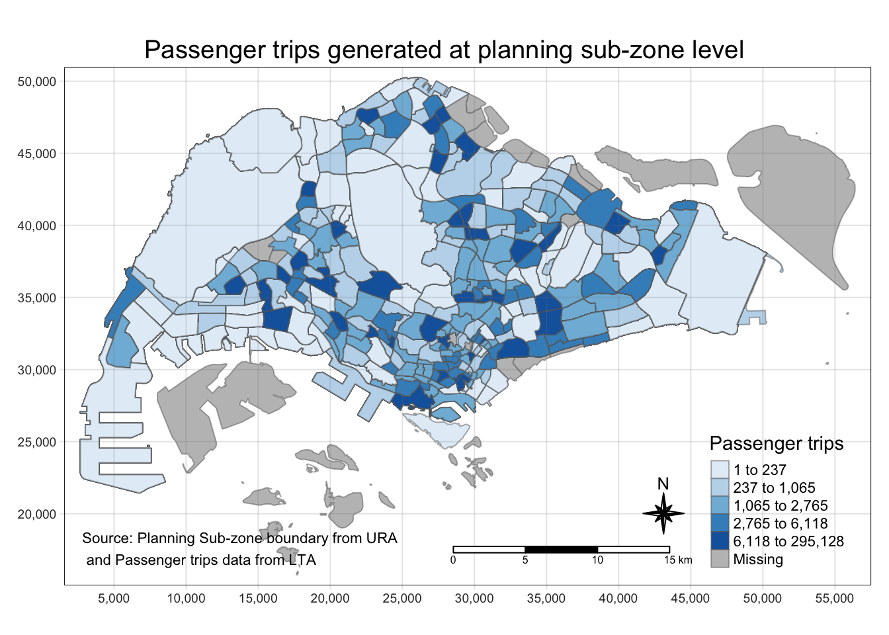

Code
pacman::p_load(tmap, sf, tidyverse, knitr, h3jsr)SSS624 Applied Geospatial Analytics will be conducted using case study approach. This run the use case is Urban Mobility analysis by using passenger volume by origin-destination bus stops. To get ready for the excercise, you are required to do the following as soon as possible:
Apply an API access from LTA by visiting LTA DataMall,
Complete the API Access formand submit. Please note that it will take at least one working day to reply you.
Next, return to Dynamic Datasets page and click on API Documentation. The pdf document appears. Click on 2.6 and read the content carefully.
Once you received the API access code, read Section 1 of API Document and follow the instruction provided to download the data sets. You are required to download last three months data (August, September and October).
pacman::p_load(tmap, sf, tidyverse, knitr, h3jsr)Import the passenger volume by origin destination bus stops data.
odbus <- read_csv("./data/aspatial/origin_destination_bus_202308.csv") %>%
mutate(ORIGIN_PT_CODE = as.factor(ORIGIN_PT_CODE),
DESTINATION_PT_CODE = as.factor(DESTINATION_PT_CODE))Check the data.
glimpse(odbus)Rows: 5,709,512
Columns: 7
$ YEAR_MONTH <chr> "2023-08", "2023-08", "2023-08", "2023-08", "2023-…
$ DAY_TYPE <chr> "WEEKDAY", "WEEKENDS/HOLIDAY", "WEEKENDS/HOLIDAY",…
$ TIME_PER_HOUR <dbl> 16, 16, 14, 14, 17, 17, 17, 17, 7, 17, 14, 10, 10,…
$ PT_TYPE <chr> "BUS", "BUS", "BUS", "BUS", "BUS", "BUS", "BUS", "…
$ ORIGIN_PT_CODE <fct> 04168, 04168, 80119, 80119, 44069, 44069, 20281, 2…
$ DESTINATION_PT_CODE <fct> 10051, 10051, 90079, 90079, 17229, 17229, 20141, 2…
$ TOTAL_TRIPS <dbl> 7, 2, 3, 10, 5, 4, 3, 22, 3, 3, 7, 1, 3, 1, 3, 1, …Extract passenger volume data between 7-9 o’clock during weekdays.
origin7_9 <- odbus %>%
filter(DAY_TYPE == "WEEKDAY") %>%
filter(TIME_PER_HOUR >= 7 &
TIME_PER_HOUR <= 9) %>%
group_by(ORIGIN_PT_CODE) %>%
summarise(TRIPS = sum(TOTAL_TRIPS))Save the output in rds format
write_rds(origin7_9, "./data/rds/origin7_9.rds")Can extract data from saved file again.
# read from saved file.
# origin7_9 <- read_rds("./data/rds/origin7_9.rds")Use sf package to read master plan subzone data and bus stop location data.
mpsz <- st_read(dsn = "./data/geospatial",
layer = "MPSZ-2019") %>% st_transform(crs = 3414)Reading layer `MPSZ-2019' from data source
`/Users/SMU/liangyao2023/ISSS624/Inclass_Ex/Inclass_Ex01/data/geospatial'
using driver `ESRI Shapefile'
Simple feature collection with 332 features and 6 fields
Geometry type: MULTIPOLYGON
Dimension: XY
Bounding box: xmin: 103.6057 ymin: 1.158699 xmax: 104.0885 ymax: 1.470775
Geodetic CRS: WGS 84busstop <- st_read(dsn = "./data/geospatial",
layer = "BusStop") %>% st_transform(crs = 3414)Reading layer `BusStop' from data source
`/Users/SMU/liangyao2023/ISSS624/Inclass_Ex/Inclass_Ex01/data/geospatial'
using driver `ESRI Shapefile'
Simple feature collection with 5161 features and 3 fields
Geometry type: POINT
Dimension: XY
Bounding box: xmin: 3970.122 ymin: 26482.1 xmax: 48284.56 ymax: 52983.82
Projected CRS: SVY21Here we use “st_transform(crs = 3414)” to change the coordinate from decimal degree to meters.
Combine the bus stop location with the Singapore subzone map.
busstop_mpsz <- st_intersection(busstop, mpsz) %>%
select(BUS_STOP_N, SUBZONE_C) %>%
st_drop_geometry()st_intersection() is used to perform point and polygon overly and the output will be in point sf object.
select() of dplyr package is then use to retain only BUS_STOP_N and SUBZONE_C in the busstop_mpsz sf data frame.
five bus stops are excluded in the resultant data frame because they are outside of Singapore boundary.
glimpse(busstop_mpsz)Rows: 5,156
Columns: 2
$ BUS_STOP_N <chr> "13099", "13089", "06151", "13211", "13139", "13109", "1311…
$ SUBZONE_C <chr> "RVSZ05", "RVSZ05", "SRSZ01", "SRSZ01", "SRSZ01", "SRSZ01",…Next, we are going to append the planning subzone code from busstop_mpsz data frame onto odbus7_9 data frame.
origin_data <- left_join(origin7_9 , busstop_mpsz,
by = c("ORIGIN_PT_CODE" = "BUS_STOP_N")) %>%
rename(ORIGIN_BS = ORIGIN_PT_CODE,
ORIGIN_SZ = SUBZONE_C)Before continue, it is a good practice for us to check for duplicating records.
duplicate <- origin_data %>%
group_by_all() %>%
filter(n()>1) %>%
ungroup()It will be a good practice to confirm if the duplicating records issue has been addressed fully.
mpsz_origtrip <- left_join(mpsz,
origin_data,
by = c("SUBZONE_C" = "ORIGIN_SZ"))Using the steps you had learned, prepare a choropleth map showing the distribution of passenger trips at planning sub-zone level.
tm_shape(mpsz_origtrip)+
tm_fill("TRIPS",
style = "quantile",
palette = "Blues",
title = "Passenger trips") +
tm_layout(main.title = "Passenger trips generated at planning sub-zone level",
main.title.position = "center",
main.title.size = 1.2,
legend.height = 0.45,
legend.width = 0.35,
frame = TRUE) +
tm_borders(alpha = 0.5) +
tm_compass(type="8star", size = 2) +
tm_scale_bar() +
tm_grid(alpha =0.2) +
tm_credits("Source: Planning Sub-zone boundary from URA\n and Passenger trips data from LTA",
position = c("left", "bottom"))